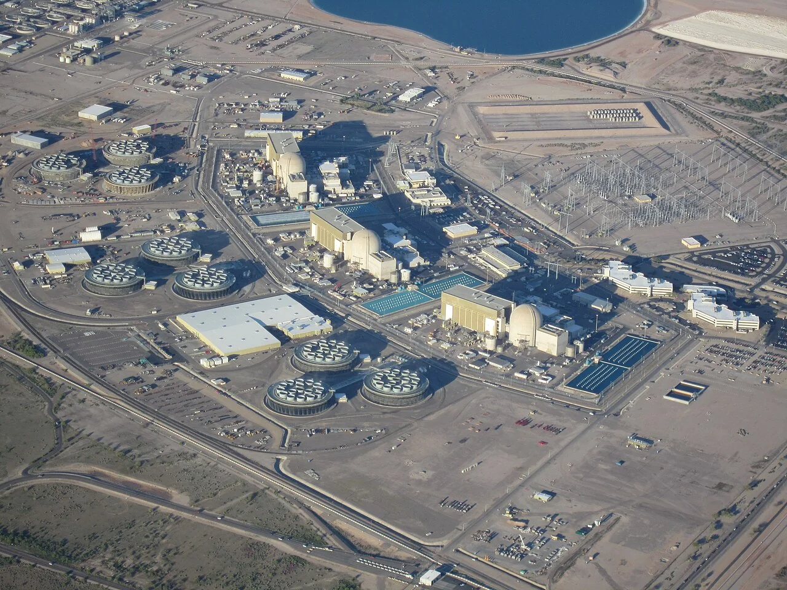
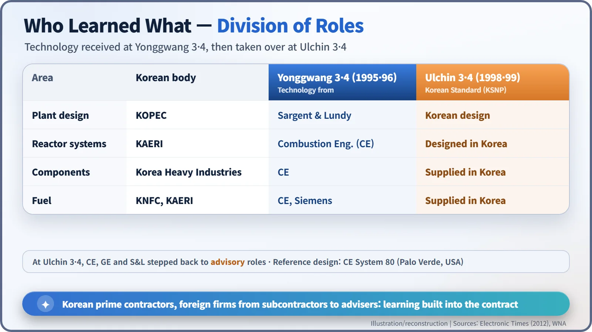
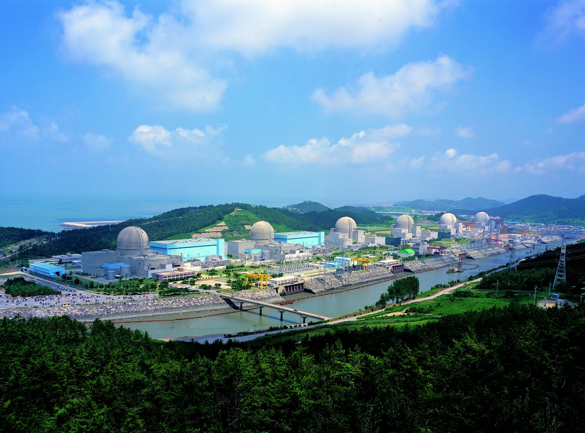
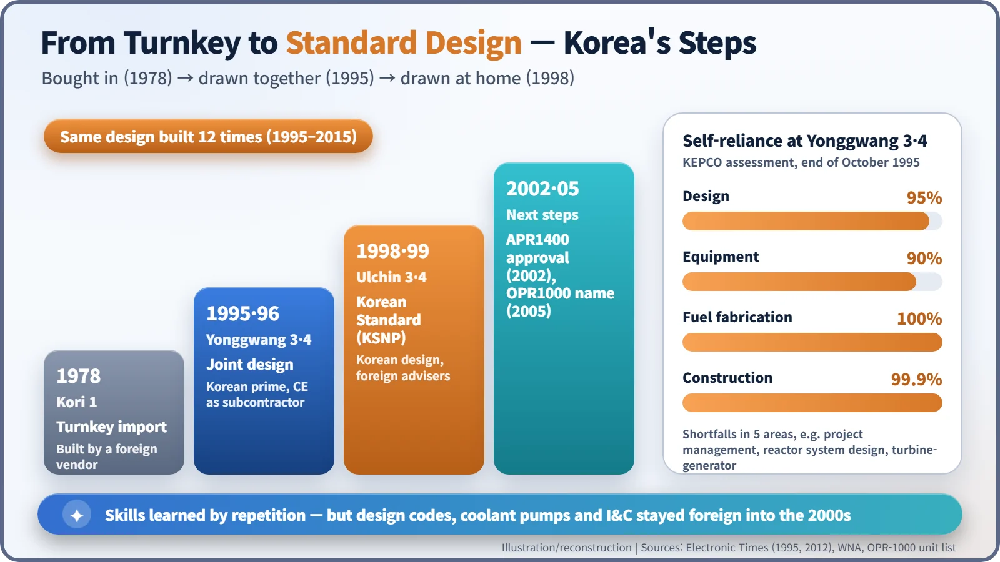
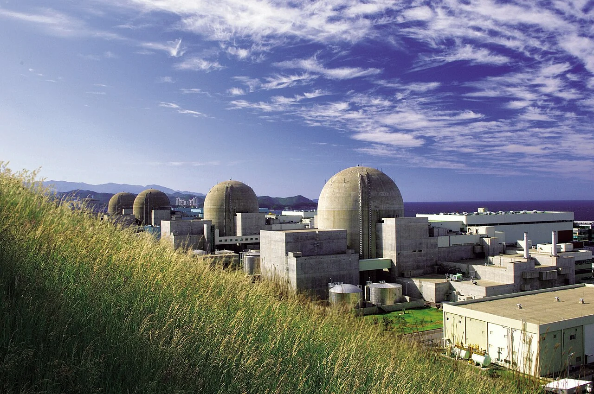

Nuclear History · 266
Learning the Blueprint, Then Redrawing It — Korea's Nuclear Self-Reliance and the Korean Standard Nuclear Plant (KSNP)
Korean organizations became prime contractors and hired foreign vendors to teach them, then drew the same two-loop plant again and again until it became the Korean standard design.
South Korea bought its first nuclear power plant, Kori 1 (1978), as a turnkey project. From 1986 it used Yonggwang 3 and 4 as a classroom: Korean organizations became prime contractors and hired foreign vendors, led by Combustion Engineering, as subcontractors who had to teach. By 1998 Ulchin 3 opened the era of the Korean Standard Nuclear Plant (KSNP), a design built twelve times and later renamed the OPR1000, although some key technologies still came from abroad into the 2000s.
Forty-four cheers in December 1986
In December 1986, so the story goes, 44 researchers gave three rousing cheers of "manse" before boarding their flights to the United States. They were led by Han Pil-soon, head of the Korea Atomic Energy Research Institute (KAERI), and they were bound for Combustion Engineering (CE), a reactor vendor based in Connecticut. The scene comes from later press recollections rather than from a contemporary record, so treat it as a story often told. [6]
What they were going to bring home was not a machine. It was a skill: how to draw a reactor plant. First they would draw it alongside the people who had designed it; next time, they would draw it themselves.
Handed the keys, not the drawings
South Korea's first nuclear power plant, Kori 1, entered commercial operation in 1978. It was a turnkey project: a foreign vendor, Westinghouse, designed and built the whole plant and handed over the keys. According to the World Nuclear Association (WNA), Korea's first three commercial units were bought this way. From the next generation of plants, Korean builders and manufacturers began to take part, but the core design work stayed abroad. [3]
Electricity demand was climbing fast. A Korean newspaper report from late 1995 put oil at 78.7% of Korea's power generation in 1980, with nuclear at 9.3%. By 1989 nuclear's share had reached 50.1%. Nuclear was becoming the backbone of the grid, yet the blueprints still belonged to someone else. The government began thinking about a Korean standard plant around 1983, and in 1986 it launched a ten-year self-reliance programme with a total budget of 178 billion won. [2] [1]
Hire the teacher as your subcontractor
The proving ground was Yonggwang 3 and 4 (the site is now called Hanbit). In 1986 Combustion Engineering was chosen as technology partner. Nuclear Engineering International later described CE as "a relatively unknown nuclear vendor" at the time, and argued that the timing, just after the Chernobyl accident, helped Korea secure favourable technology-transfer terms. [4] In 1987 a ten-year technology transfer programme with CE began, and CE's two-loop System 80 design was adopted as the standard. It was the design used at the Palo Verde plant in Arizona. [3] [1]

The twist was in the contracts. Korean organizations became the prime contractors, and the foreign firms came in as subcontractors whose job included teaching. KOPEC (now KEPCO E&C) learned overall plant design from Sargent & Lundy; KAERI learned reactor system design from CE; Korea Heavy Industries learned to make the reactor equipment, turbine and generator with CE technology; and the fuel company KNFC and KAERI learned fuel design from CE and Siemens. [1] Korean engineers travelled to CE's headquarters in Windsor, Connecticut, and worked on the design side by side with their American counterparts. [4]

Yonggwang 3 first sent power to the grid on 30 October 1994 and entered commercial operation on 31 March 1995; unit 4 followed on 1 January 1996. [5] An assessment by the national utility KEPCO, completed at the end of October 1995, rated self-reliance by area: design 95%, equipment 90%, fuel fabrication 100% and construction 99.9%. The achievement is often summed up as "95% self-reliance", but the figure differed from one area to the next, and the remaining gaps sat in five areas, including project management, reactor system design and the turbine-generator. [2]

What happens when you draw the same plant again
Then it was time to draw without the teacher. On 19 July 1990 the 225th meeting of Korea's Atomic Energy Commission approved the project plan for the first Korean Standard Nuclear Plant. At Ulchin 3 and 4 (the site is now called Hanul), Korean organizations did the design, while CE, GE and Sargent & Lundy stepped back to advisory roles. When Ulchin 3 entered commercial operation on 11 August 1998, the era of the Korean Standard Nuclear Plant, or KSNP, had begun. [1]

Standardization drew its strength from repetition. Build the same design again and the drawings, component specifications and operator training all carry over. In 1995 KEPCO expected the main contract for Yonggwang 5 and 6 to cost 40% less. [2] In the end this two-loop pressurized water reactor of about 1,000 megawatts (MW) was built twelve times between 1995 and 2015, and in 2005, with foreign customers in mind, it was renamed the OPR1000. [5]

The blanks still left on the page
Not every box had been filled in. A 2012 Electronic Times report noted that three key technologies still relied on foreign suppliers: the core design computer codes, the reactor coolant pumps and the instrumentation and control systems. The government called this the remaining "5%" and set up a separate programme to localize it. [1] Self-reliance, in other words, was less a single moment of arrival than a process of crossing out the blanks one by one.
Meanwhile, in 1992, work began on a larger next-generation reactor. The 1,400 MW-class APR1400 received standard design approval in May 2002 (some sources, including the WNA, date the certification to May 2003). [1] [3] The exercise book in which Korean engineers once traced someone else's lines had become, a decade later, a drawing board for designs of their own.